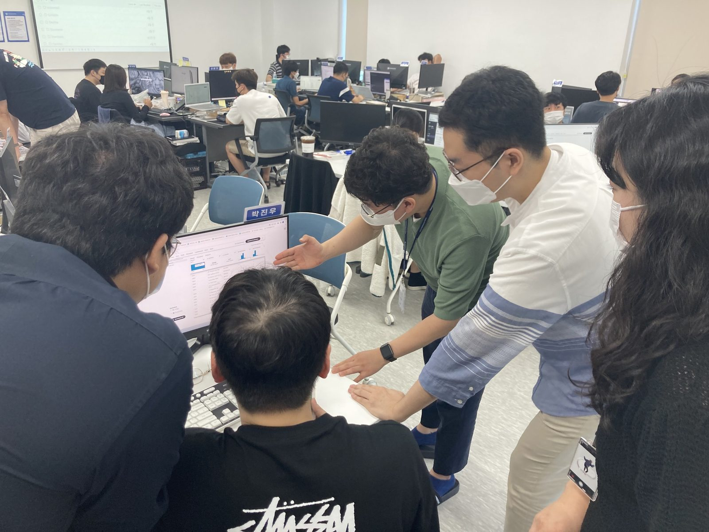
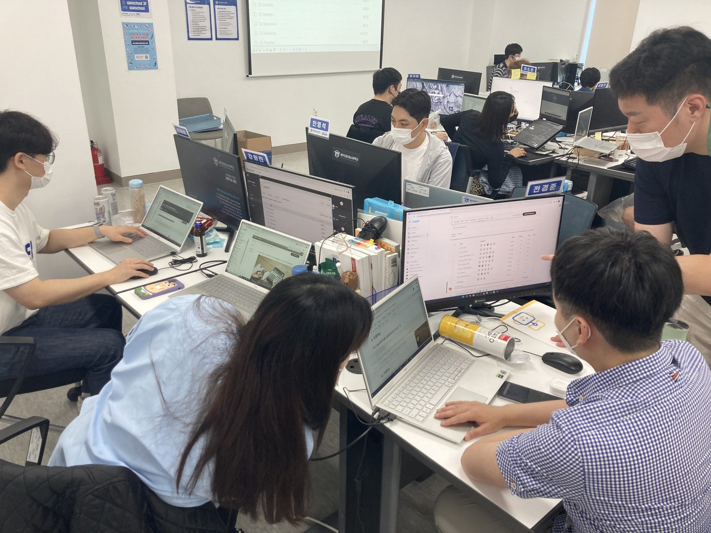
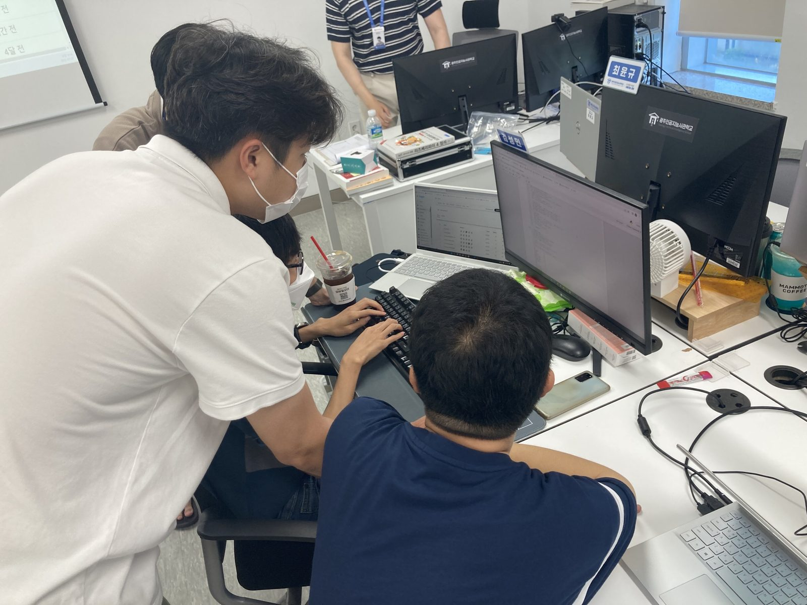

🎡 Data의 놀이터 , Kaggle Festival🎈
안녕하세요~ 여러분! ╰(*°▽°*)╯ 오늘은 Coding Festival 현장스케치 2탄을 들고 왔습니다 ! 지난 Javafestival에 이어 광주인공지능사관학교에서 진행된 데이터 분석 경진대회 kaggle festival를 소개해보려고 합니다. 캐글이 무엇인지 모르시는 분들을 위해서 짧은 설명 갑니다![ Kaggle(캐글)이란? 🤔 ]
📣 데이터 과학 및 머신러닝 경진대회를 주최하는 온라인 커뮤니티
전 세계 데이터 과학자, 훌륭한 코드, 좋은 문화가 있어 데이터 과학 역량을 쌓는 데는 최적의 플랫폼으로
개인이나 작은 기업에서 쉽게 접할 수 없는 다양한 데이터로 머신러닝을 연습해 볼 수 있으며,
같은 목표로 대회에 참여한 전 세계 데이터 과학자들과 교류할 수 있습니다.
📃 Kaggle 경진대회 진행방식
📌 대회참여 시작일로부터 자유롭게 submit 가능
📌 머신러닝 모델을 이용해서 분석
📌 분류/회귀 중 1개 이상의 대회를 팀단위로 참여
📌 대회 종료 후 최정결과 산정
주제는 두 가지로 분류/회귀로 나뉘어지며 원하는 주제를 선택할 수 있습니다. ( 둘 다 참여 가능 )
click ▶ 개인수입 예측하기(분류)
click ▶ 주택가격 예측하기(회귀)
예측 결과는 대회 시작일로부터 자유롭게 제출할 수 있으며
하루 제출 가능 횟수는 팀원 모두를 포함한 횟수로 다음날 초기화됩니다.
팀원들이 한대 모여 열띤 토론 중이네요! ( •̀ ω •́ )✧

public 리더 보드에는 test 데이터의 50%에 대한 점수만 보여줍니다. 나머지 test 데이터에 대한 점수까지 반영된 private 리더보드는 대회 종료 시 오픈되는 방식으로 진행되었습니다.
모두들 경진대회라고 한다면 경쟁이 떠오르실 텐데요? "캐글에서는 그렇지 만은 않습니다." 캐글은 자신이 작성한 코드와 아이디어가 활발히 공유되는 공간입니다. 경쟁 상황과 공유 문화는 실력을 쌓기에 좋은 환경으로 경쟁상황이 없다면 추진력을 내기 어렵고, 공유문화가 없다면 생각의 확장이 제한적입니다.
그러므로 [ Kaggle festival ]을 통해 머신러닝의 역량 강화 뿐만 아니라 공유와 경쟁의 상승효과를 경험할 수 있습니다! 경진대회의 결과가 궁금하신 분들은 현재 대회가 종료되었으므로 상위 링크를 걸어둔 캐글사이트 Leaderboard private에서 순위를 확인하실 수 있습니다.(✿◡‿◡)